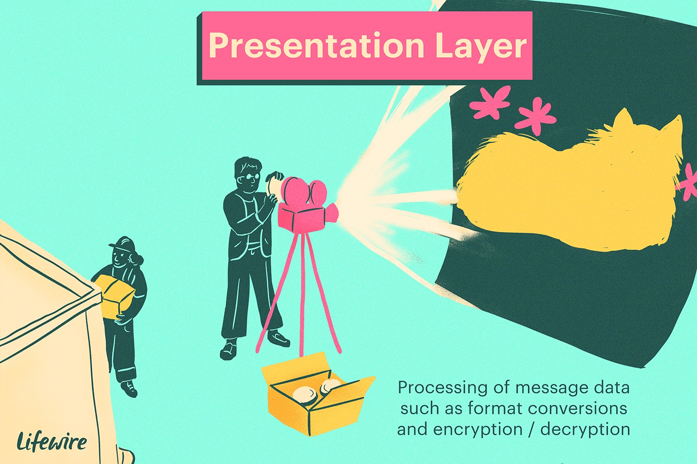
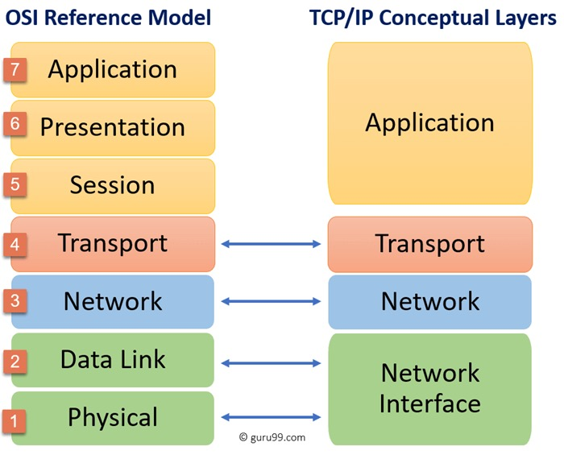

Charlie and Liam
The Presentation Layer
What is the presentation layer?
The presentation layer is the second layer coming after the application layer in the OSI model.
"It ensures that data is in a useable format and is where data encryption occurs."(cloudfare)
What does it do?
The presentation layer is in charge of getting data ready to be used in the aplication layer.
"The presentation layer is responsible for translation, encryption, and compression of data."
"Layer 6 is responsible for translating incoming data into a syntax that the application layer of the receiving device can understand."
"Layer 6 is also responsible for adding the encryption on the sender’s end as well as decoding the encryption on the receiver's end" (cloudfare)
Lastly, it is also responsible for compressing and decompressing data between layer 7 and 5.

TCP/IP Model
In the TCP/IP model, the presentation layer is apart of the application layer. It is in the layer with application and session layer.
